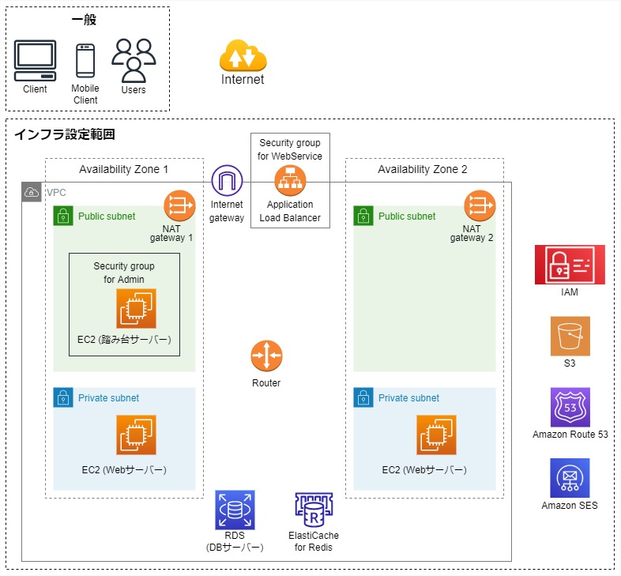

インフラ構築
AWSを使用し本格的なビジネスアプリを構築するために必要なインフラサービスについて学びながらインフラ構築を行いました。
構成図・構築内容

- AWSアカウントを作成する
- IAMユーザーの作成やMAFを有効化する
- VPC、サブネット、NATゲートウェイ、ルートテーブル、セキュリティーグループを作成する
- 踏み台サーバー用のEC2、キーペアを作成する
- Webサーバー用のEC2の作成、TeraTermを使い多段接続する
- ロードバランサ―を作成する
- データベースサーバーを作成する
- 画像の保存場所の用意/S3とロールを作成する
- 独自ドメインとDNSを作成する
- メールサーバーを用意する
- キャッシュサーバーを作成する
- サンプルアプリを導入する
環境
- インフラ構築:AWS/Tera Term Varsion:4.106
- 構図作成 :diagrams.net
>
教材
- AWSではじめるインフラ構築入門 安全で堅牢な本番環境の作り方